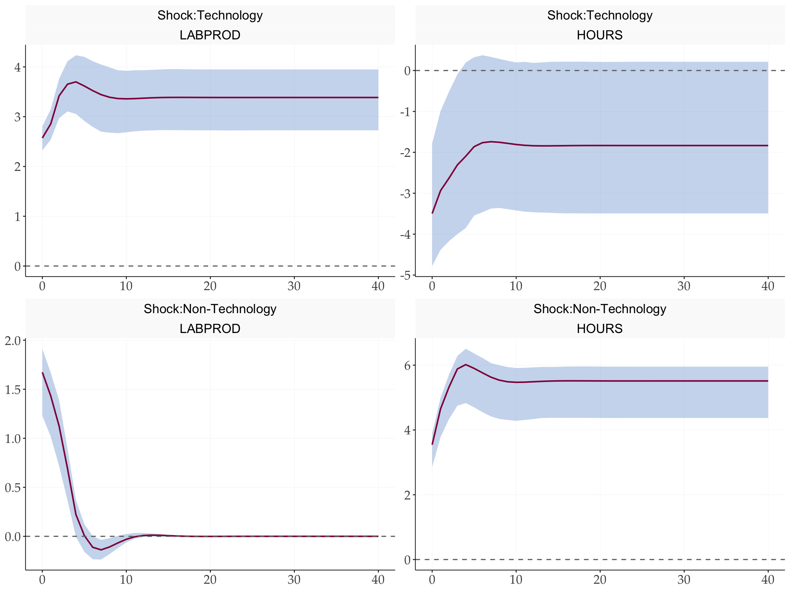
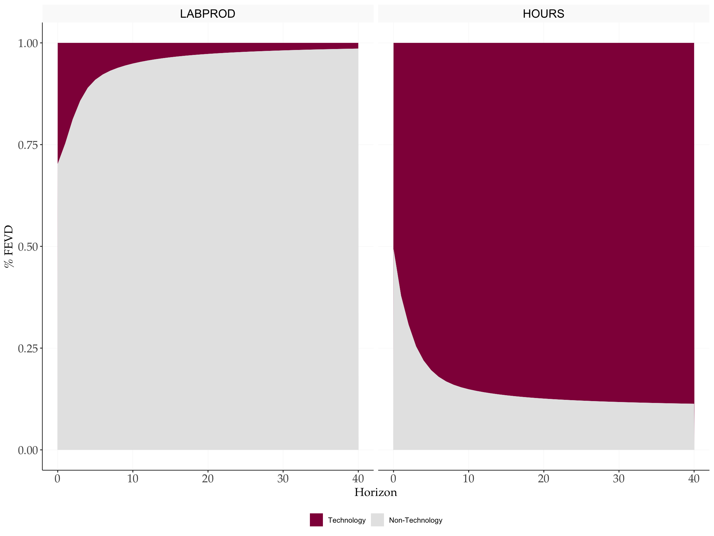

Replication: Galí (1999)
Technology, Employment, and the Business Cycle: Do Technology Shocks Explain Aggregate Fluctuations?
2026-03-25
Source:vignettes/Replications/Gali1999.qmd
1 Overview
This document replicates the main empirical results of Galí (1999), which identifies technology shocks using the Blanchard-Quah (BQ) long-run restriction: only technology shocks can have a permanent effect on labor productivity. The VAR is estimated on US data in first differences, and level responses are recovered by cumulating the IRFs.
2 Setup
3 Data
4 VAR Estimation
5 BQ Identification
Galí (1999) assumes only technology shocks have a permanent effect on labour productivity. This imposes a lower-triangular structure on the long-run multiplier matrix , identified via:
horizon <- 40
wold <- fwoldIRF(var_result, horizon = horizon)
# Long-run multiplier matrix
C1 <- apply(wold, c(1, 2), sum)
# Lower Cholesky of long-run covariance
D1 <- t(chol(C1 %*% Sigma %*% t(C1)))
# Structural impact matrix
K <- solve(C1, D1)
# BQ IRFs (in first differences)
irf_bq <- fbqIRF(wold, K)6 Bootstrap Confidence Bands
tic()
boot_bq <- fbootstrapBQ(
y = y,
var_result = var_result,
nboot = 1000,
horizon = 40,
prc = 68,
bootscheme = "residual",
cumulate = c(1, 2)
)
toc()
#> 0.066 sec elapsed7 Impulse Response Functions
Level responses are recovered by cumulating the first-differenced IRFs. The first shock is the technology shock; the second is the non-technology shock.
source(here::here('R', 'fplotirf_bq.R'))
fplotirf_bq(
point = irf_bq,
upper = boot_bq$upper,
lower = boot_bq$lower,
varnames = c("LABPROD", "HOURS"),
shocknames = c("Shock:Technology", "Shock:Non-Technology"),
cumulate = c(1, 2),
shocks = c(1, 2),
prc = 68
)
8 Forecast Error Variance Decomposition
# Cumulate BQ IRF along horizon (dim 3) to get level responses
irf_cumu <- irf_bq
for (h in 2:dim(irf_bq)[3]) {
irf_cumu[,, h] <- irf_cumu[,, h] + irf_cumu[,, h - 1]
}
# FEVD — reuses Cholesky FEVD function (same maths)
fevd <- fevd_chol(irf_cumu, shock = 0)$fevd
fevd <- fevd[, c(2, 1), ] # optional, for vis purposes
fplot_vardec(
fevd = fevd,
varnames = c("LABPROD", "HOURS"),
shocknames = c("Technology", "Non-Technology")
) +
scale_fill_manual(values = tidyMacro_colors[1:2])
9 Historical Decomposition
histdec_all <- vector("list", N)
ystar_all <- matrix(0, nrow = T - p, ncol = N)
for (series in seq_len(N)) {
res <- fhistdec(y, var_result, K, series)
histdec_all[[series]] <- res$histdec
ystar_all[, series] <- res$ystar
}
names(histdec_all) <- c("LABPROD", "HOURS")
fplot_histdec(
histdec_list = histdec_all,
shock = 1,
shockname = "Technology",
dates = dates,
p = p,
facet_ncol = 1
) +
scale_x_date(date_breaks = "6 years", date_labels = "%Y")
10 Conditional Correlations
Following Galí (1999), we decompose the unconditional correlation between hours and productivity into shock-specific conditional correlations. The conditional correlation for shock is:
# Dimensions of irf_bq: [variables, shocks, horizon]
N_shocks <- dim(irf_bq)[2]
# Numerator: for each shock i, sum of cross-products of IRFs of var 1 and var 2
numerator <- numeric(N_shocks)
for (i in 1:N_shocks) {
temp <- irf_bq[1, i, ] * irf_bq[2, i, ]
numerator[i] <- sum(temp)
}
# Denominator: sqrt of product of sum-of-squares for each shock
irf_squared <- irf_bq^2
denominator <- numeric(N_shocks)
for (i in 1:N_shocks) {
v1 <- sum(irf_squared[1, i, ])
v2 <- sum(irf_squared[2, i, ])
denominator[i] <- sqrt(v1 * v2)
}
# Conditional correlations (one per shock)
cond_corr <- numerator / denominator
# Unconditional correlations
uncond_corr <- cor(y)
cat("Unconditional correlation (Productivity, Hours):", round(uncond_corr[1, 2], 3), "\n")
#> Unconditional correlation (Productivity, Hours): -0.203
cat("Conditional correlation | Technology shock: ", round(cond_corr[1], 3), "\n")
#> Conditional correlation | Technology shock: -0.901
cat("Conditional correlation | Non-Technology shock: ", round(cond_corr[2], 3), "\n")
#> Conditional correlation | Non-Technology shock: 0.733The unconditional correlation between hours and productivity is small, at odds with standard RBC models. However, the conditional correlation driven by the technology shock is negative: a positive technology shock reduces hours worked. The non-technology shock yields a positive conditional correlation — the pattern RBC theory incorrectly attributed to technology.